ВСТУП · НАВЧАЛЬНИЙ КУРСПеремішування у харчових технологіях
Процес · обладнання · якість
Фізична сутність процесу
Реальні конструкції промислових мішалок
Особливості різних харчових середовищ
Від речовини до продукту
01 / 43
ВСТУП · НАВЧАЛЬНИЙ КУРСНавіщо перемішують?
Технологічні цілі
Досягти однорідності складу
Утримати частинки у зваженому стані
Поліпшити перенесення тепла та речовини
Керувати структурою харчового продукту
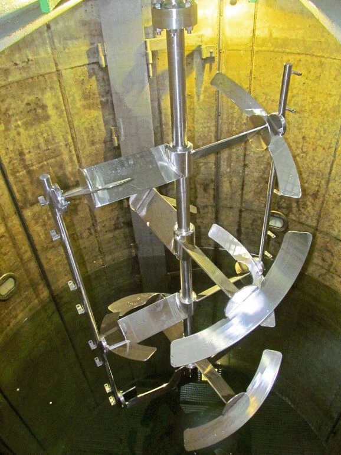
ФОТО · Промисловий вузол інтенсивного перемішування густого середовищаДжерело ↗Однорідність ≠ максимальна швидкість
02 / 43
ОСНОВИ · НАВЧАЛЬНИЙ КУРСЩо саме перемішуємо?
Системи різної природи
Рідина + рідина: розчини і суміші
Рідина + тверді частинки: суспензії
Рідина + газ: дисперсні системи
Сипкі матеріали, пасти та тістові маси
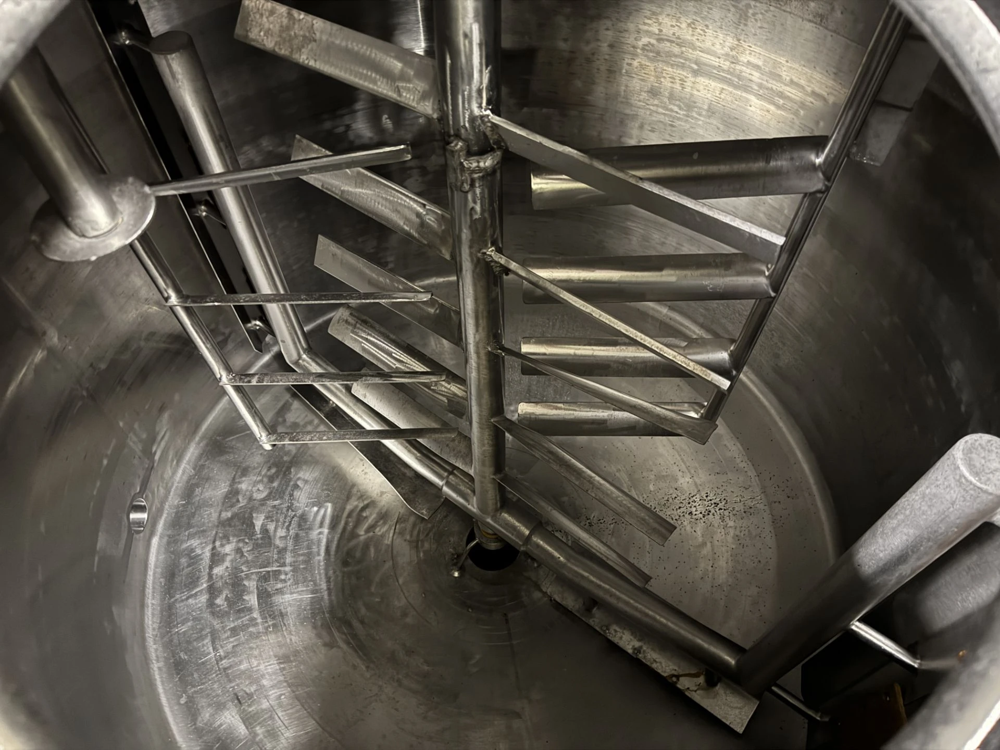
ФОТО · Робочі органи апарата для високов’язких масДжерело ↗Властивості середовища визначають апарат
03 / 43
ОСНОВИ · НАВЧАЛЬНИЙ КУРССпособи перемішування
Чотири підходи
Механічне: обертовий робочий орган
Пневматичне: введення газу у рідину
Циркуляційне: насос і зовнішній контур
Статичне: нерухомі елементи у потоці
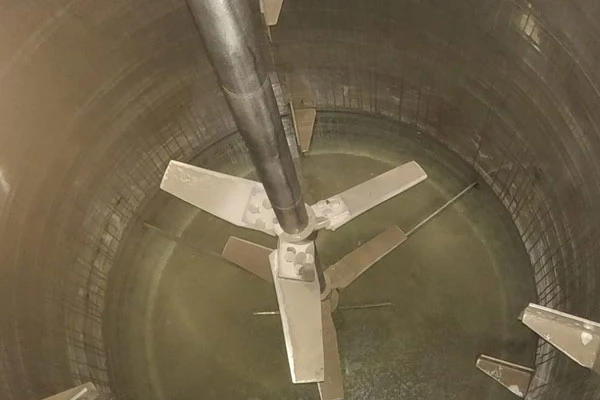
ФОТО · Трилопатева мішалка з похилими лопатямиДжерело ↗Різні способи — різні механізми руху
04 / 43
КОНСТРУКЦІЇ · НАВЧАЛЬНИЙ КУРСЯк влаштований змішувальний апарат?
Базова будова
Резервуар і днище
Привод, вал та робочий орган
Патрубки й арматура
Перегородки, сорочка, ущільнення — за потреби
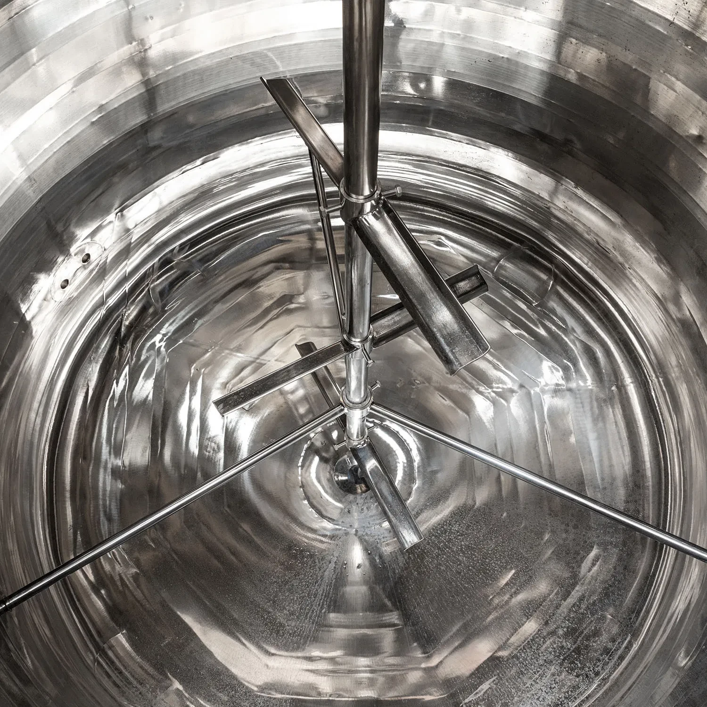
ФОТО · Вал і робочі органи в резервуаріДжерело ↗Будову апарата читаємо від привода до робочого органа
05 / 43
ГІДРОДИНАМІКА · НАВЧАЛЬНИЙ КУРСОсьовий, радіальний і тангенціальний рух
Три компоненти швидкості
Осьовий: уздовж вала
Радіальний: від осі до стінки або назад
Тангенціальний: навколо вала
У реальному апараті компоненти поєднуються
Напрям потоку — не назва мішалки
06 / 43
ГІДРОДИНАМІКА · НАВЧАЛЬНИЙ КУРСВоронка, застійні зони й відбивні перегородки
Геометрія важлива
Надмірне закручування не тотожне змішуванню
Перегородки послаблюють обертання всього об’єму
Розташування мішалки змінює картину циркуляції
Чому перегородки змінюють рух?
↻
Без перегородокМожливе переважання обертання рідини та утворення воронки⇅
З перегородкамиМенше закручування; інтенсивніше перемішування в об’єміНе оцінюйте якість перемішування лише за видимою воронкою
07 / 43
ГІДРОДИНАМІКА · НАВЧАЛЬНИЙ КУРСЯк впливає в’язкість?
Від води до пасти
Низька в’язкість: швидка об’ємна циркуляція
Висока в’язкість: локалізований рух і повільне оновлення об’єму
Для неньютонівських середовищ важлива залежність в’язкості від зсуву
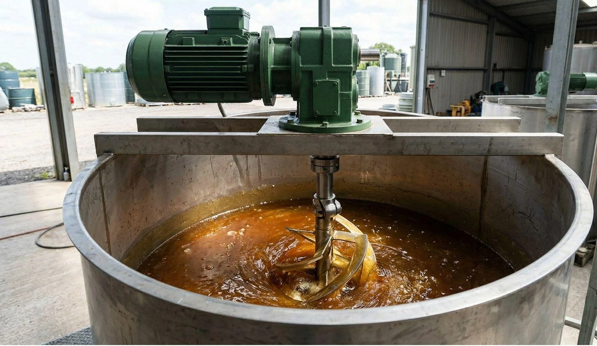
ФОТО · Перемішування високов’язкого продукту промисловою мішалкоюДжерело ↗Один і той самий робочий орган не підходить для всього
08 / 43
ДОДАТКОВІ КОНСТРУКЦІЇКласифікація механічних мішалок
Як пов’язати масштаби процесу з конструкцією робочого органа
Порівнюємо характер руху, швидкість та в’язкість продукту.
Низьков’язкі рідини — пропелерні й турбінні мішалки.
Густі пасти — рамні, якірні, стрічкові конструкції.
Густі пасти — рамні, якірні, стрічкові конструкції.
09 / 43
КОНСТРУКЦІЇ · НАВЧАЛЬНИЙ КУРСПропелерна мішалка
Осьова циркуляція
Нахилені лопаті створюють осьове прокачування
Підходить насамперед для малов’язких рідин
Поширені задачі: розчинення, вирівнювання концентрації
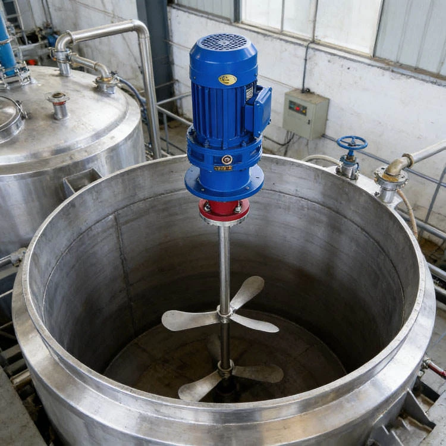
ФОТО · Реальний вертикальний пропелерний змішувачДжерело ↗На фото: пропелер, не турбіна
10 / 43
ДОДАТКОВІ КОНСТРУКЦІЇКонструктивні варіанти лопатевих мішалок
Парні лопаті, перегородки, рамні та похилі лопаті
Різна геометрія створює різний розподіл швидкості.
Відбивні перегородки пригнічують спільне обертання рідини.
Рамні органи поліпшують переміщення в’язких мас.
Рамні органи поліпшують переміщення в’язких мас.
11 / 43
КОНСТРУКЦІЇ · НАВЧАЛЬНИЙ КУРСТурбіна Руштона
Радіальний потік
Диск із прямими радіальними лопатями
Створює інтенсивні локальні зсуви
Застосовується для диспергування, газорідинного контакту
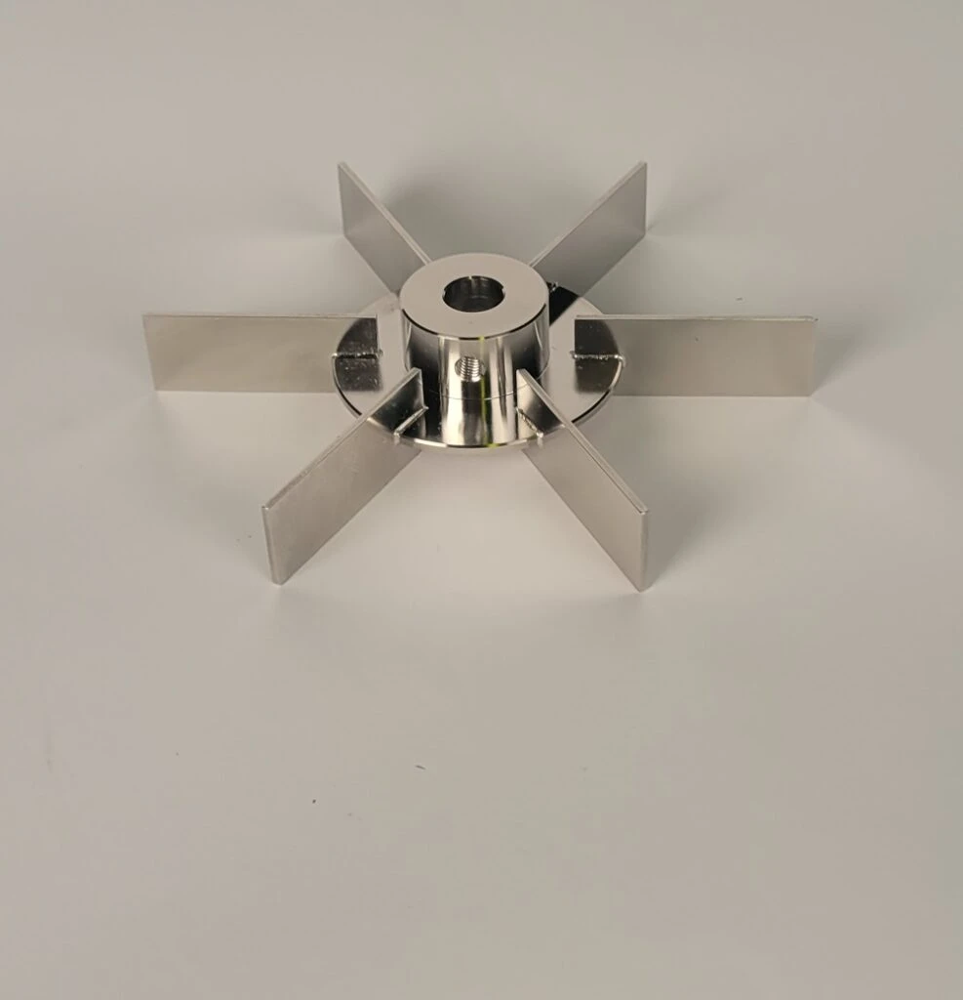
ФОТО · Шестилопатева турбіна РуштонаДжерело ↗На фото: характерна шестилопатева турбіна
12 / 43
ДОДАТКОВІ КОНСТРУКЦІЇПропелерні, турбінні й якірні мішалки: схеми
Зіставлення робочих органів за конструкцією та призначенням
Пропелерні — переважно осьова циркуляція.
Турбінні — локальні зони інтенсивного зсуву.
Якірні — оброблення пристінного шару в’язкого продукту.
Якірні — оброблення пристінного шару в’язкого продукту.
13 / 43
КОНСТРУКЦІЇ · НАВЧАЛЬНИЙ КУРСЯкірна мішалка
Для в’язких середовищ
Робочий орган повторює контур стінки
Невеликий зазор до поверхні апарата
Скребки покращують оброблення пристінного шару
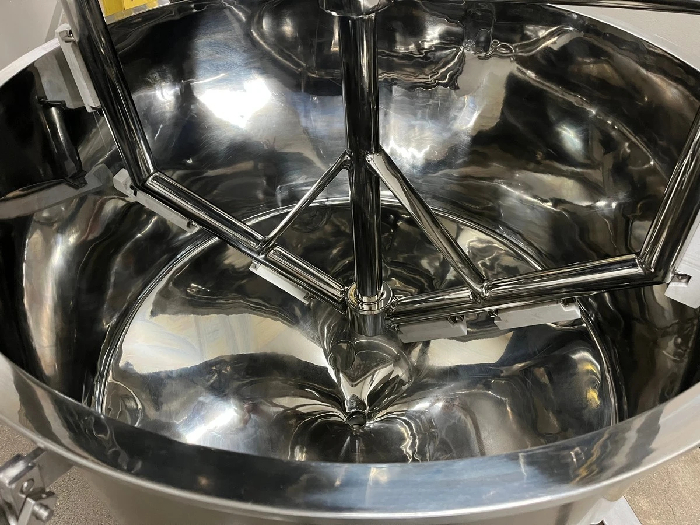
ФОТО · Якірний робочий орган у резервуарі — вигляд зверхуДжерело ↗Якір повторює контур апарата; наявність і матеріал скребків перевіряють за конструкцією.
14 / 43
КОНСТРУКЦІЇ · НАВЧАЛЬНИЙ КУРСГоризонтальний стрічковий змішувач
Для сипких харчових сумішей
Подвійні гвинтові стрічки формують протилежні осьові потоки
Використовується для сухих сумішей, порошків і гранул
Для в’язких рідин застосовують інші конструкції спіральних стрічкових мішалок
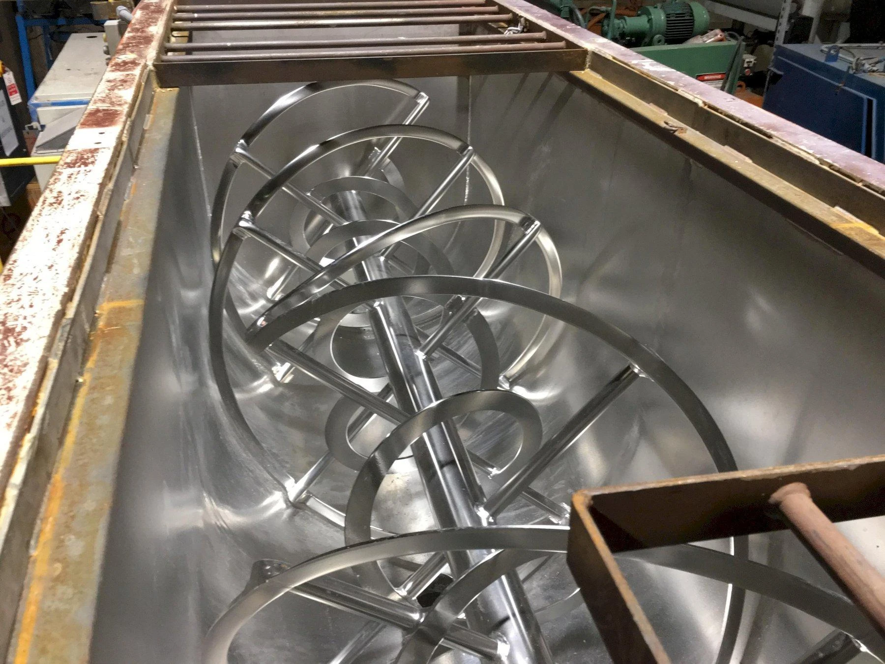
ФОТО · Стрічковий робочий орган у горизонтальному змішувачіДжерело ↗Важливо: тут показано змішувач порошків, а не мішалку густої рідини
15 / 43
КОНСТРУКЦІЇ · НАВЧАЛЬНИЙ КУРСЛопатеві змішувачі
Інтенсивне змішування сипких мас
Лопаті переміщують матеріал у кориті
Можливі один або два вали
Характерна задача — компоненти з близькими розмірами частинок
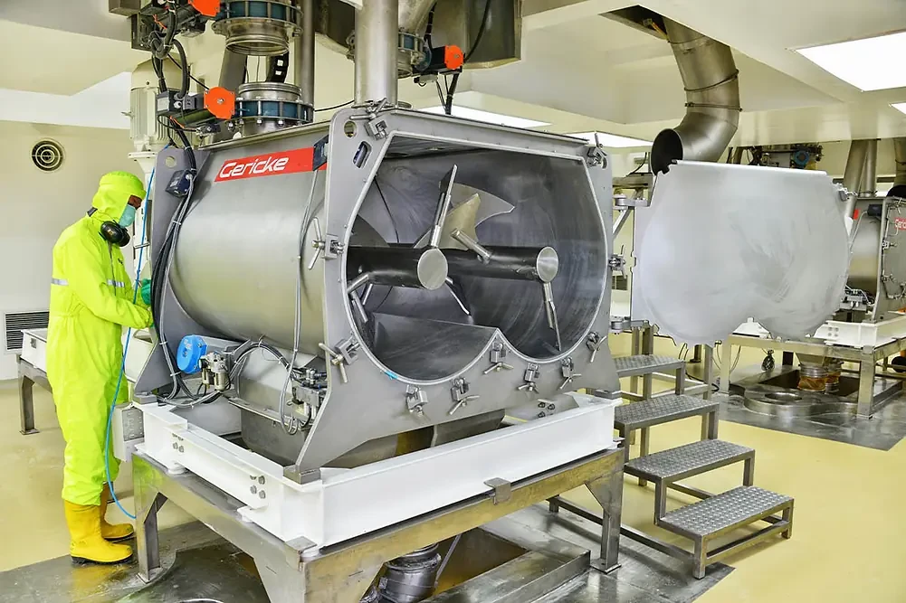
ФОТО · Промисловий двовальний лопатевий змішувачДжерело ↗На фото: промислова двовальна лопатева машина
16 / 43
КОНСТРУКЦІЇ · НАВЧАЛЬНИЙ КУРСПланетарні змішувачі
Складна траєкторія руху
Робочий орган обертається навколо власної осі
Одночасно переміщується відносно чаші
Креми, збиті маси, кондитерські суміші
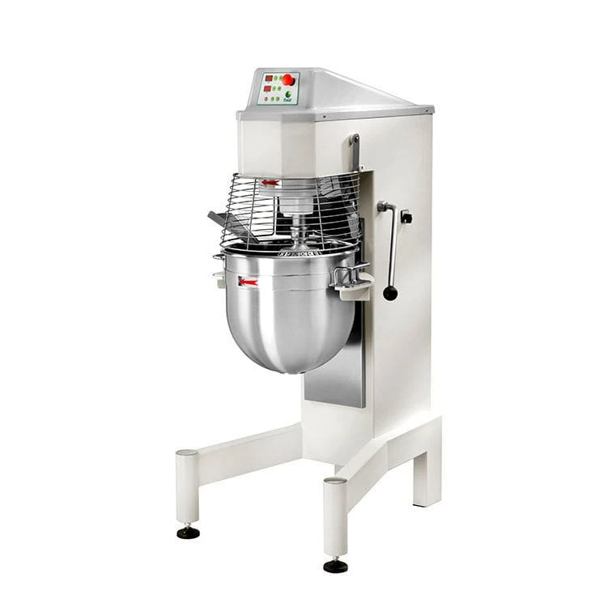
ФОТО · Планетарний міксер FimarДжерело ↗На фото: справжній планетарний міксер
17 / 43
КОНСТРУКЦІЇ · НАВЧАЛЬНИЙ КУРССпіральний тістоміс
Замішування та розвиток структури тіста
Спіраль формує й переміщує тістову масу
Конструкція залежить від системи обертання діжі
Важливо контролювати структуру й температуру тіста
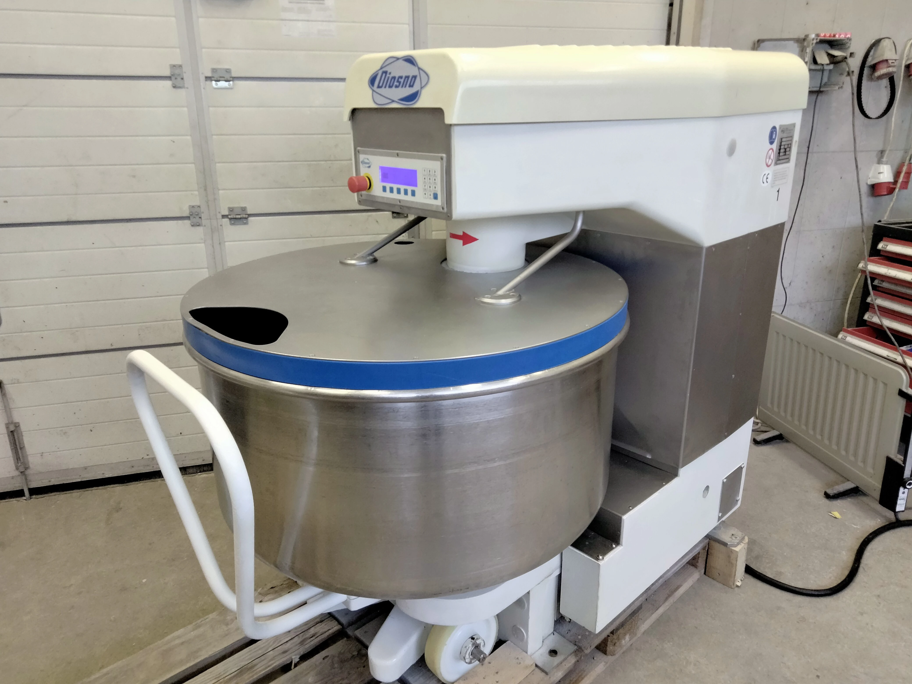
ФОТО · Промисловий спіральний тістоміс DiosnaДжерело ↗На фото: спіральний тістоміс
18 / 43
КОНСТРУКЦІЇ · НАВЧАЛЬНИЙ КУРСZ-подібні місильні лопаті
Високов’язкі та пластичні маси
Два фасонні органи працюють у кориті
Розтягування, стискання та зсув матеріалу
Застосування залежить від складу й реології маси
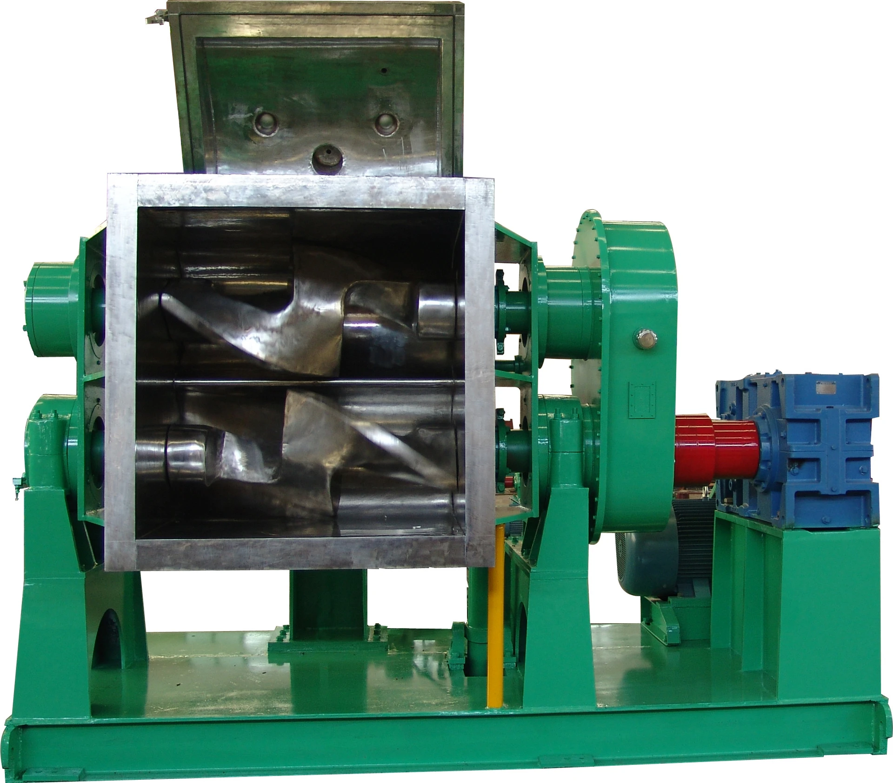
ФОТО · Двовальний Z-подібний (sigma) місильний апаратДжерело ↗На фото: дві Z-подібні лопаті
19 / 43
ДОДАТКОВІ КОНСТРУКЦІЇШнекові та стрічкові мішалки для в’язких мас
Важливо відрізняти вертикальну стрічкову мішалку від горизонтального блендера порошків
Шнек із циркуляційною трубою створює направлений рух.
Стрічкова мішалка захоплює й переміщує в’язке середовище.
Дискові та місильні органи вирішують інші задачі зсуву.
Дискові та місильні органи вирішують інші задачі зсуву.
20 / 43
КОНСТРУКЦІЇ · НАВЧАЛЬНИЙ КУРССтатичні змішувачі
Без обертового вала
Нерухомі елементи поділяють і перебудовують потік
Працюють за наявності руху середовища трубопроводом
Зручні для безперервного дозування та змішування
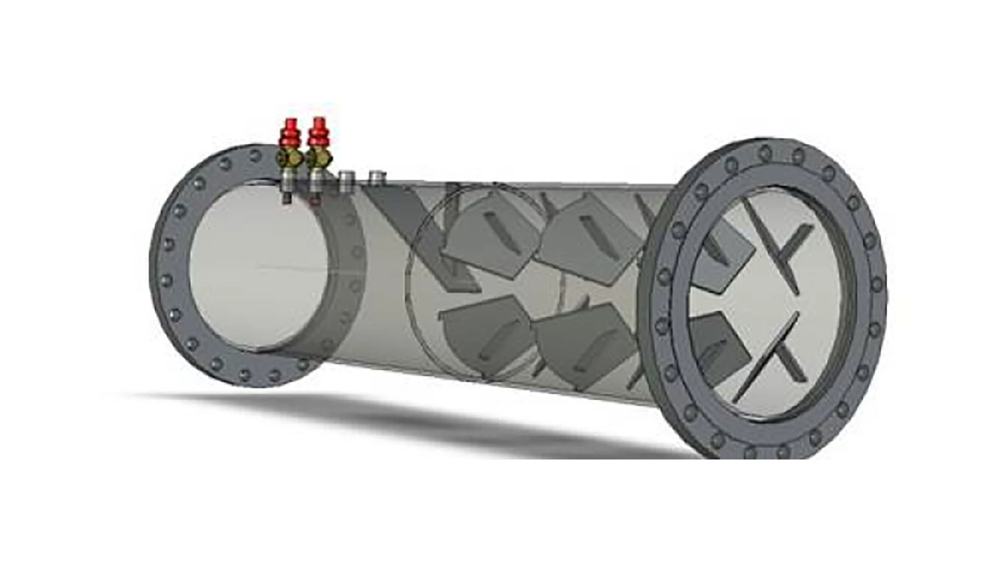
ФОТО · Технічна візуалізація статичного змішувача Kenics WVMДжерело ↗Kenics WVM ілюструє принцип статичного змішування; конкретне виконання добирають для продукту.
21 / 43
КОНСТРУКЦІЇ · НАВЧАЛЬНИЙ КУРСРоторно-статорні змішувачі
Високі локальні швидкості зсуву
Рухомий ротор взаємодіє з нерухомим статором
Призначені для диспергування та емульгування
Важливе обмеження — чутливість структури продукту
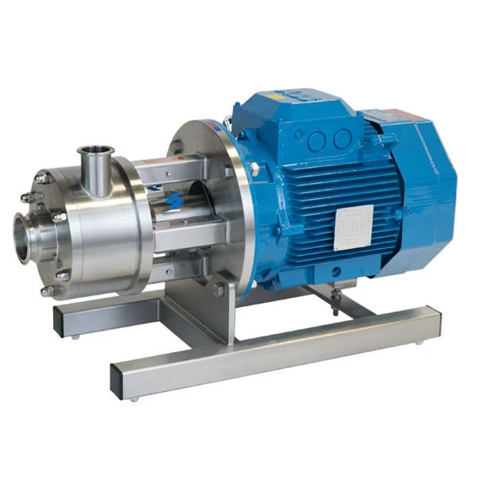
ФОТО · Промисловий роторно-статорний змішувач SilversonДжерело ↗На фото: промисловий проточний вузол
22 / 43
ДОДАТКОВІ КОНСТРУКЦІЇПотокові, ежекторні та барботажні змішувачі
Механічний вал потрібен не завжди
Потокові вставки перебудовують рідинний потік.
Ежектор використовує енергію струменя для змішування.
Барботаж і ерліфт поєднують рух рідини з газовою фазою.
Барботаж і ерліфт поєднують рух рідини з газовою фазою.
23 / 43
ГІДРОДИНАМІКА · НАВЧАЛЬНИЙ КУРСВитрата і циркуляція
Гідравлічне перемішування
Зовнішній насос створює циркуляційний контур
Струмінь або рециркуляція переносять компоненти
Слід перевіряти однорідність по всій місткості
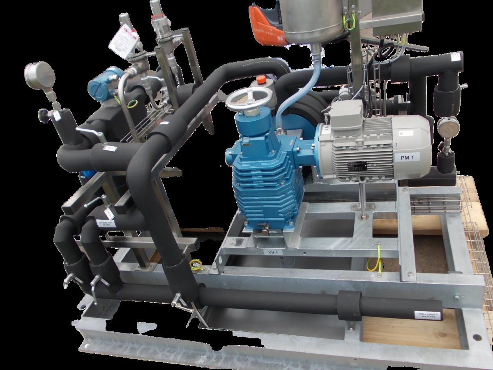
ФОТО · Циркуляційний насосний модульДжерело ↗Фото: реальний насосно-трубопровідний модуль
24 / 43
ТЕХНОЛОГІЇ · НАВЧАЛЬНИЙ КУРСЕмульгування в харчових технологіях
Соуси та емульсійні продукти
Необхідно сформувати дрібні краплі дисперсної фази
Саме перемішування не гарантує стійкості емульсії
Важливі рецептура, емульгатор, час і режим оброблення
Зображено окремий змішувальний вузол; повна установка також включає дозування та циркуляційний контур.
25 / 43
ТЕХНОЛОГІЇ · НАВЧАЛЬНИЙ КУРСЗмішування сухих інгредієнтів
Борошно, цукор, сухі суміші
Потрібно уникати сегрегації за розміром і густиною
Важливі завантаження та час змішування
Надмірна обробка може знову погіршити однорідність
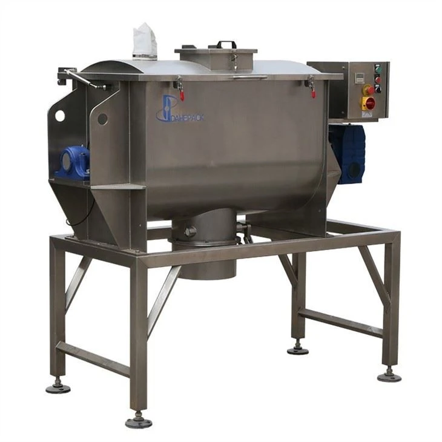
ФОТО · Закритий горизонтальний змішувач сипких продуктівДжерело ↗Фото: горизонтальний порошковий змішувач
26 / 43
ДОДАТКОВІ КОНСТРУКЦІЇКласифікація змішувачів сипких матеріалів
Окрема група апаратів — не переносимо критерії рідин безпосередньо
Змішувачі з обертовими робочими органами.
Змішувачі з рухомим корпусом і комбіновані схеми.
Критична особливість — сегрегація частинок.
Критична особливість — сегрегація частинок.
27 / 43
СИПКІ МАТЕРІАЛИ · ТЕХНОЛОГІЯЯк перемішують сипкі матеріали?
Механізми змішування та ризик сегрегації
Конвективне змішуванняПереміщення великих об’ємів частинок лопатями або шнеками.
Зсувне змішуванняВзаємне переміщення шарів сипкої маси.
Дифузійне змішуванняВипадкове взаємне перерозміщення окремих частинок.
На результат впливають розмір і густина частинок, вологість, заповнення апарата та тривалість оброблення.
≋СтрічковіБорошняні й сухі суміші
⥀ЛопатевіПремікси, спеції
↟ШнековіПереміщення зернового шару
◌БарабанніДелікатне перекочування
Ризик: надмірне перемішування може спричинити повторну сегрегацію.
Оцінюємо однорідність складу, а не швидкість обертання робочого органа.
28 / 43
ДОДАТКОВІ КОНСТРУКЦІЇОсновні схеми змішування сипких продуктів
Лопатевий, шнековий, перегрібач, ударний та барабанний
Порівняйте рух матеріалу, а не тільки зовнішній вигляд машини.
Шнековий перегрібач особливо наочно ілюструє зворушування шару.
Барабанний тип створює змішування перекочуванням.
Барабанний тип створює змішування перекочуванням.
29 / 43
СИПКІ МАТЕРІАЛИ · КОНСТРУКЦІЯШнековий солодозворушувач
Приклад зворушування зернового шару під час солодорощення
ПРИНЦИПОВА НАВЧАЛЬНА СХЕМА
1Каретка пересувається вздовж солодоростильного ящика.
2Вертикальні шнеки розпушують і перерозподіляють шар зерна.
3Перфороване днище забезпечує підведення кондиційованого повітря.
4Результат — зменшення ущільнення шару й сприяння рівномірній аерації.
На відміну від змішувача порошків, тут необхідно зберегти цілісність пророщеного зерна.
Конструкція обслуговує технологічний процес пророщування, а не просто перемішує компоненти.
30 / 43
ТЕХНОЛОГІЇ · НАВЧАЛЬНИЙ КУРСМ’ясні фарші й багатокомпонентні маси
Рівномірний розподіл добавок
Перемішування забезпечує внесення солі й спецій
Слід враховувати температуру та структуру
Тип і тривалість оброблення впливають на якість
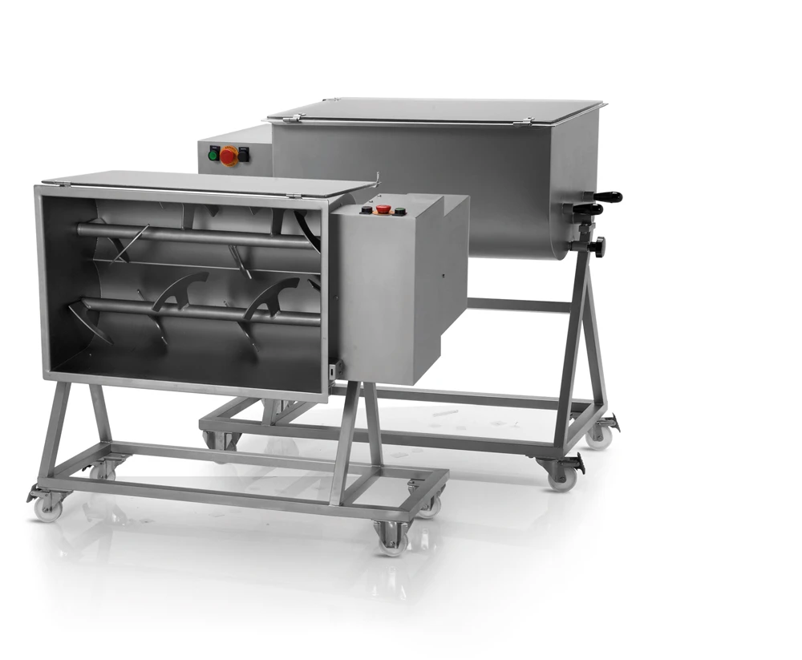
ФОТО · Дволопатевий змішувач фаршуДжерело ↗Фото: змішувач фаршу
31 / 43
ТЕХНОЛОГІЇ · НАВЧАЛЬНИЙ КУРСШоколадні маси
Коншування
Механічне оброблення поєднується з теплообміном
Змінюються текучість, текстура та аромат
Тривалість і температура визначаються технологією
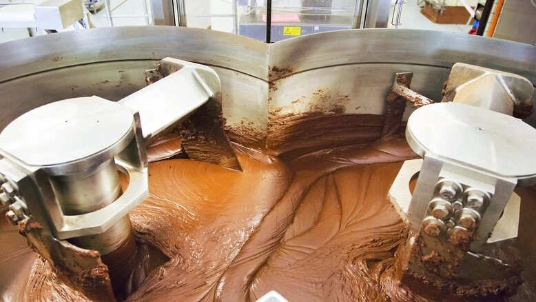
ФОТО · Коншування шоколадної маси на виробництвіДжерело ↗Під час коншування поєднуються механічний і тепловий вплив.
32 / 43
ТЕХНОЛОГІЇ · НАВЧАЛЬНИЙ КУРСМолочні продукти
Перемішування та нагрівання
Підтримання однорідності у резервуарі
Поєднання перемішування з теплообміном
Делікатний вплив на чутливі компоненти продукту
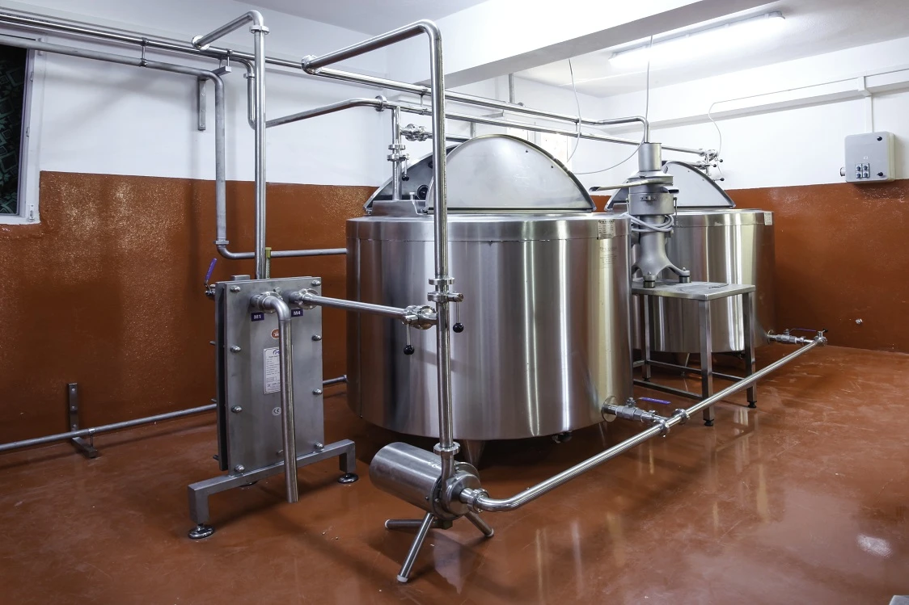
ФОТО · Технологічний резервуар молочного виробництваДжерело ↗Фото: промисловий молочний резервуар
33 / 43
ТЕХНОЛОГІЇ · НАВЧАЛЬНИЙ КУРСПеремішування поблизу поверхні теплообміну
Скребкові апарати
В’язкий продукт створює великий термічний опір
Скребки оновлюють пристінний шар
Поєднання транспорту, теплопередачі та механічного впливу
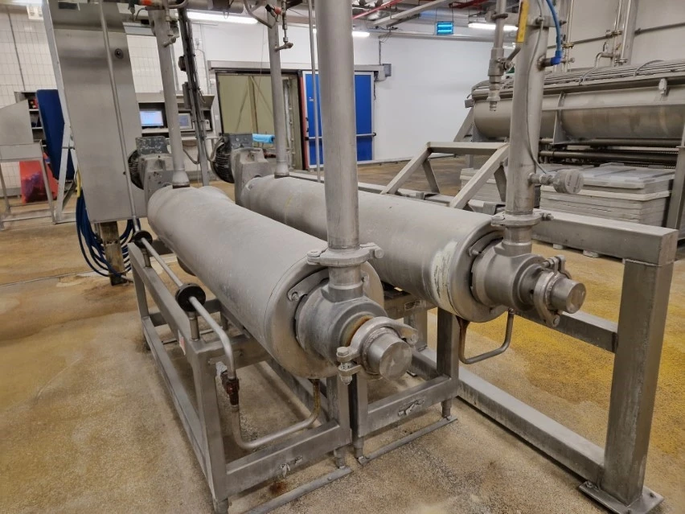
ФОТО · Скребковий теплообмінний апарат VotatorДжерело ↗Скребковий теплообмінник — суміжний апарат із механічним оновленням пристінного шару
34 / 43
ДОДАТКОВІ КОНСТРУКЦІЇПеремішування в біореакторах і ферментерах
Газова, рідинна та комбінована енергія перемішування
Барботажні ферментери: енергія газової фази.
Ежекторні та циркуляційні: енергія потоку рідини.
Комбіновані: мішалка разом із барботером.
Комбіновані: мішалка разом із барботером.
35 / 43
ОЦІНКА ПРОЦЕСУ · НАВЧАЛЬНИЙ КУРСЯк визначають якість перемішування?
Не лише час
Проби в різних точках і часах
Коливання концентрації / показника однорідності
Час до досягнення заданого критерію
Вимоги продукту важливіші за абсолютний максимум турбулентності
Як перевірити однорідність?
●●●
Проби із різних зонПорівнюємо показник концентрації або складуКритерій завершення — задана допустима неоднорідність
Критерій якості має бути вимірюваним
36 / 43
ОЦІНКА ПРОЦЕСУ · НАВЧАЛЬНИЙ КУРСРежими руху: коротко про критерій Re
Одна головна формула
Reₘ = ρ · n · d² / μ — для ньютонівської рідини
Велике Reₘ відповідає переважанню інерційних ефектів
Межі режимів залежать від типу мішалки та геометрії
Формула — для розуміння режиму, не окрема задача
37 / 43
ОЦІНКА ПРОЦЕСУ · НАВЧАЛЬНИЙ КУРСПотужність і енергоефективність
Залежність потужності від конструкції та режиму
P = Nₚ · ρ · n³ · d⁵ — типова форма для ньютонівських середовищ
Коефіцієнт Nₚ залежить від геометрії та режиму
Мета — потрібна якість за обґрунтованих енерговитрат
Сильніше перемішування не завжди краще
38 / 43
ВИБІР ОБЛАДНАННЯ · НАВЧАЛЬНИЙ КУРСЯк обрати конструкцію?
Послідовність рішень
1. Властивості продукту: в’язкість, частинки, чутливість
2. Технологічна ціль: змішати, розчинити, диспергувати
3. Режим роботи: періодичний чи безперервний
4. Гігієна, очищення, нагрівання, масштаб
Матриця технологічного рішення
| Продукт / мета | Типова конструкція |
|---|
| Рідкий сироп · розчинення | Осьова |
| В’язкий соус · нагрівання | Якірна зі скребками |
| Майонез · емульгування | Ротор–статор |
| Суха суміш · однорідність | Стрічковий змішувач |
Правильна мішалка — компроміс між якістю й впливом на продукт
39 / 43
РОЗРАХУНОК ПОТУЖНОСТІГрафік для визначення витрати енергії
Залежність критерію потужності від Re та конструкції мішалки
Далі визначають потужність на валу мішалки.
40 / 43
РОЗРАХУНКИ · ПОТУЖНІСТЬРозрахунок потужності мішалки
Приклад із лекції 8 FoodProcessPortal: цукровий сироп
1 · ВИХІДНІ ДАНІρ = 1150 кг/м³μ = 0,015 Па·сd = 0,40 мn = 3 с⁻¹Nₚ = 5
2 · РЕЖИМ РУХУReм = ρnd²/μ
Reм = 36 800 → турбулентний
3 · ПОТУЖНІСТЬ НА ВАЛУP = Nₚ · ρ · n³ · d⁵
P = 5 · 1150 · 3³ · 0,40⁵
≈ 1,59 кВт
4 · ПРИВІДЗ урахуванням запасу та ККД передачі встановлену потужність уточнюють окремо.
Навчальний орієнтир: двигун 2,2 кВт
У турбулентній області P ∝ n³d⁵: збільшення швидкості різко підвищує енерговитрати.
41 / 43
РОЗРАХУНКИ · ЯКІСТЬЯк оцінити якість перемішування?
Пробовідбір і коефіцієнт варіації концентрації
5 ПРОБ ІЗ РІЗНИХ ЗОН АПАРАТА9,8%№ 1
10,1%№ 2
10,0%№ 3
10,2%№ 4
9,9%№ 5
CV = sC̄ · 100%
Середня концентрація C̄ = 10,0%; вибіркове стандартне відхилення s ≈ 0,158 процентного пункту.
CV = 1,58%
01 Відібрати репрезентативні проби.
02 Виміряти концентрацію компонента.
03 Обчислити середнє та відхилення.
04 Порівняти CV з вимогами продукту.
Порогове CV не універсальне: його задають окремо для конкретної суміші та методики контролю.
Однорідність підтверджують за планом пробовідбору та встановленим критерієм якості.
42 / 43
ПІДСУМОК · НАВЧАЛЬНИЙ КУРСП’ять запитань для обговорення
Перевір себе
Чим відрізняються пропелерна і турбінна мішалки?
Навіщо якірній мішалці скребки?
Коли обрати статичний змішувач?
Чому при перемішуванні важлива реологія?
Як оцінити однорідність готової суміші?
Фінальна інженерна логіка
Властивості продукту→Ціль процесу→Робочий орган→Перевірка якості
Найпотужніша мішалка не обов’язково найкраща.
Спостерігай → пояснюй → обирай обладнання
43 / 43